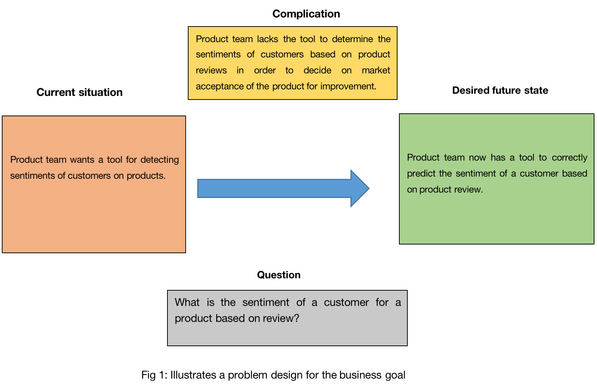

This post describes an end to end project on predicting review sentiments by customers using Natural Language Processing and Deep Learning with Pytorch.
“The customer is always right” is an adage that has come to stay with businesses that believe in continuous improvement of products through reviews and feedback. There is no better time to fully convert this mantra into business operations than now with the support of data science techniques for processing texts.
Taking note of this, most businesses are beginning to take advantage of vast text data available to them by employing tools and techniques to extracts insights from large text datasets. Among others, understanding what customers think of products or services is a common classification task that data scientist undertake using Natural Language Processing (NLP) in support of businesses.
This tutorial is to demonstrate one of such projects. The focus is to provide the workflow from translating the problem statement into various analytical frameworks and implement a Deep Learning solution using pytorch. The aim is not to exhaust all the intricacies of deep learning and pytorch but how to undertake a text classification project using them. Taking a practical orientation means using a case study to explain and understand the work flow. For this, Yelp dataset, which is publicly available, will be used. The dataset contains reviews for businesses and based on this a hypothetical case study is design to develop a model for predicting customer sentiments for products.
Hypothetically, the product team has identified as one of the tasks for the quarter, the need to gain a general overview of user sentiments for the product in order to make a case for product innovation and improvement. Due to large volume of review provided which is set to grow astronomically in the future, the mundane task of reading each review and deciding the sentiment being express is not feasible nor desirable. Rather, the product team needs a tool that can accurately analyze reviews and determine whether they are negative or positive sentiment. The absence of such a tool remains the main challenge that we as a data scientist have been contacted to develop.
The understanding from the problem statement needs to be translated into a problem design framework that provides a high level overview for both technical and non-technical audience. This is the first stage – gain a proper understanding and context of the problem to solve at a business level.
format width height colorspace matte filesize density
1 PNG 1640 1068 sRGB TRUE 150579 57x57
The problem statement of the project is captured as snapshot using the Situation Question Complication framework. It describes at a glance, the current situation, the basic question that will be answered with the data and the expected outcome after successful execution of the project. This is the overaching goal that needs to be noted before going into the technicalities of the project and will serve as a terms of reference upon which the data scientist and the product team (the audience requesting the project – usually non-technical people) will have a discussion and decide on status of project completion.
One issue that comes to mind and worth noting is that, the problem design framework is kept succinct and devoid of any data science jargon. This is meant to facilitate understanding between the data scientist and the business person or end-user of the work. A deeper dive into managing the project and identifying the technical requirement is better relegated to the stage of project scoping. This is where a discussion of the project approach can be identified as a reference point for the technical team (data science team) or individual handling the project.
Data science is essentially research hence at the forefront of the project pipeline is the research question and objective driving it. Getting the research question right is fundamental to successfully completing the project wit the right results. A hint was provide in the problem design framework as to the research question and objective that should be tackled. While a number of them can be to list and tackled, it is limited to the following;
What is the sentiment of a customer for a product based on a review?
To determine the sentiment of a customer for a product based on review
Based on the research question and objective as well as the type and nature of dataset, a number of insights can be predefined to constitute the scope of the project.
Goal: To develop a highly accurate model as a tool for predicting the sentiments expressed in product reviews. The task to achieve this project goal is identified as follows
Task: To undertake binary supervise classification of reviews into classes of “positive” and “negative” sentiment. The yelp dataset has labels or the target is correctly labeled. A review text will be classified as either “positive” or “negative”.
Method: Deep learning based Natural Language Processing (NLP) will used to undertake text classification. Usually, the decision of which method and algorithm to use is based on several factors including exploratory analysis. However, this is predefined to be using a deep learning approach as the focus of demonstrating NLP using deep learning with pytorch. Other approaches such as machine learning are possible.
Text data requires preprocessing and encoding into feature types that are understandable by algorithms before the actual modeling, evaluation and prediction. Each stage of the pipeline has it own unique processes and varies even by dataset type and format as well as project focus. For this analysis, the process is summarized as follows;
The text cleaning process is dataset dependent. For Yelp dataset the reviews are written in english hence basic english sentence syntax can be used to clean the text. For example, space is used to separate the next word from the previous one after a punctuation make. Context of the analysis also plays a role in text preprocessing. Example, in classifying text into positive and negative classes, numbers in a text or review are not likely to provide any insight so they can be removed as part of the text preprocessing step.
To implement this, the require packages are imported as follows;
# import packages
from collections import Counter
import re
import string
import numpy as np
import pandas as pd
import torch
import torch.nn as nn
import torch.optim as optim
from torch.utils.data import Dataset, DataLoader
import pandas as pdA simple function for text preprocessing is depicted below;
def preprocess_text(text):
text = text.lower()
text = re.sub(r"([.,!?])", r" \1 ", text)
text = re.sub(r"[^a-zA-Z.,!?]+", r" ", text)
return textA distinction can be made between components that are specific to NLP task and those related to Deep Learning. For this sentiment analysis, NLP specific components to be implemented are identifed as follows
The above component needs to be implemented on the text dataset as part of preprocessing before building a classifier model. Before then, let read the dataset and describe it.
review_df = pd.read_csv(datapath)
print(f"Number of observations: {review_df.shape[0]}")Number of observations: 56000review_df.head() rating review split
0 negative all i can say is that a i had no other option ... train
1 negative i went here once when my long time stylist mov... train
2 negative i don t know why i stopped here for lunch this... train
3 negative did i order the wrong thing ? or maybe it was ... train
4 negative i went here for restaurant week . the restaura... trainIn classifying reviews, the set of review words needs to be mapped before hand. The body of reviews currently available is what will be used to train a model hence the words in this review provides the predictive power of the model. It is important the reviews to be predicted in the future using the current model have their words searched and if found retrieved from the map of words used for the training. Thus a vocabulary map is needed. This map will then be used to lookup words when a review is provided. This vocabulary map serves as a ground truth and when a text is provided later for prediction with some words not in the vocabulary map, the those unfound words will be indicated as UNK being unknown and given the corresponding integer of UNK.
For the token map and a number of actions can be performed on it including the option to add a token when not found in the map of token, add multiple tokens, search to find the index of a token or the token for an index. This makes writhing the vocabulary object as a class with methods for such actions to be undertaken on a token map.
The implementation for extracting vocabulary for mapping is below.
## set seed to make work reproducible
np.random.seed(123)
torch.manual_seed(123)<torch._C.Generator object at 0x7f840cab75d0>class Vocabulary(object):
def __init__(self, token_to_idx=None, add_unk=True, unk_token="<UNK>"):
if token_to_idx is None:
token_to_idx = {}
self._token_to_idx = token_to_idx
self._idx_to_token = {idx: token
for token, idx in self._token_to_idx.items()}
self._add_unk = add_unk
self._unk_token = unk_token
self.unk_index = -1
if add_unk:
self.unk_index = self.add_token(unk_token)
def add_token(self, token):
if token in self._token_to_idx:
index = self._token_to_idx[token]
else:
index = len(self._token_to_idx)
self._token_to_idx[token] = index
self._idx_to_token[index] = token
return index
def check_token(self, token):
if self.unk_index >= 0:
return self._token_to_idx.get(token, self.unk_index)
else:
return self._token_to_idx[token]
def check_tokenindex(self, index):
if index not in self._idx_to_token:
raise KeyError(f"Index {index} is not found in the Vocabulary")
return self._idx_to_token[index]
def __str__(self):
return "<Vocabulary(size=%d)>" % len(self)
def __len__(self):
return len(self._token_to_idx)
A critical aspect of text analysis is to represent the text as integers for the algorithm to process In this analysis, one-hot encoding method is used. When a review data is provided, the tokens are looked up from the vocabulary table discussed earlier and when not found the token is added to the vocabulary.For this, the review data has two dimensions, the review and the outcome or rating indicating whether is positive or negative. Because the ratings are definate as in only two classes are expected, unknown tokens, that is anything other “positive” and “negative” are not added to the vocabulary map. In the case of review text, they are expected to vary just as customers expresssion are hence unknown token are added. This also means that there could be as many tokens as could be hence demanding large memory for processing. To handle this only tokens occuring more than 25 times are considered
The implementation for the vectorizing reviews for modelling is below
class Encoder(object):
def __init__(self, review_vocab, rating_vocab):
self.review_vocab = review_vocab
self.rating_vocab = rating_vocab
def vectorize(self, review: str):
one_hot = np.zeros(len(self.review_vocab), dtype=np.float32)
for token in review.split(" "):
if token not in string.punctuation:
one_hot[self.review_vocab.check_token(token)] = 1
return one_hot
@classmethod
def from_dataframe(cls, review_df, word_frequency=25):
review_vocab = Vocabulary(add_unk=True)
rating_vocab = Vocabulary(add_unk=False)
# Add ratings
for rating in sorted(set(review_df.rating)):
rating_vocab.add_token(rating)
# Add top words if count > provided count
word_counts = Counter()
for review in review_df.review:
for word in review.split(" "):
if word not in string.punctuation:
word_counts[word] += 1
for word, count in word_counts.items():
if count > word_frequency:
review_vocab.add_token(word)
return cls(review_vocab, rating_vocab)
In order to develop a generazible model, it is required that part of the dataset is used for training, another for evaluating the model to decide how the parameters are to optimized for gradient descent (validation dataset) and yet another separate dataset for testing the performance of the model (test dataset). The evaluation of the model on validation dataset provides the signals to be backpropagated to update the model parameters. Both the training and validation datasets are operated on in batches which means training and evaluating the model on slices of the dataset until all the dataset have been used during a training section.
Thus, a dataset object will require a number of actions to be performed on it making it ideal for writing a class for it implementation. Methods for splitting the dataset into various types and slicing the dataset into batches are required. For simplity, the dataset has already been split. into train, test, and validation and providied as a single dataframe with a column indicating the split type.
The implementation for the handling the dataset is as below;
class DataPrep(Dataset):
def __init__(self, review_df: pd.DataFrame, vectorizer):
self.review_df = review_df
self._vectorizer = vectorizer
self.train_df = self.review_df[self.review_df.split=='train']
self.train_size = len(self.train_df)
self.val_df = self.review_df[self.review_df.split=='val']
self.validation_size = len(self.val_df)
self.test_df = self.review_df[self.review_df.split=='test']
self.test_size = len(self.test_df)
self._lookup_dict = {'train': (self.train_df, self.train_size),
'val': (self.val_df, self.validation_size),
'test': (self.test_df, self.test_size)}
self.set_split('train')
@classmethod
def load_dataset_and_make_vectorizer(cls, review_data: pd.DataFrame = review_df):
train_review_df = review_df[review_df.split=='train']
return cls(review_df, Encoder.from_dataframe(train_review_df))
def get_vectorizer(self):
return self._vectorizer
def set_split(self, split: str ="train"):
self._target_split = split
self._target_df, self._target_size = self._lookup_dict[split]
def __len__(self):
return self._target_size
def __getitem__(self, index):
row = self._target_df.iloc[index]
review_vector = \
self._vectorizer.vectorize(row.review)
rating_index = \
self._vectorizer.rating_vocab.check_token(row.rating)
return {'features': review_vector,
'outcome': rating_index}
def create_batches(dataset, batch_size, shuffle=True,
drop_last=True, device="cpu"):
dataloader = DataLoader(dataset=dataset, batch_size=batch_size,
shuffle=shuffle, drop_last=drop_last)
for data_dict in dataloader:
out_data_dict = {}
for name, tensor in data_dict.items():
out_data_dict[name] = data_dict[name].to(device)
yield out_data_dictThe main components taht are specific to deep learning are the classifier model, training and evaluations operations. Hyperparameter optimization is an important step but not undertaken in this post to keep things as simple and short as possible
As indicated earlier, we are interested in developing a deep learning model. A simple perceptron is used to demonstrate the modeling process here. A simple pereptron is a deep learning model architecture with an input layer and an output layer without hidden layers.
An implementation of the simple classifier model is depicted below;
class ClassifierModel(nn.Module):
def __init__(self, num_features):
super(ClassifierModel, self).__init__()
self.fc1 = nn.Linear(in_features=num_features,
out_features=1)
def forward(self, x_in, apply_sigmoid=False):
y_out = self.fc1(x_in).squeeze()
if apply_sigmoid:
y_out = torch.sigmoid(y_out)
return y_out
As part of the training of model and evaluation the accuracy of the model has to estimated. The indicates the degree of correctness in the models fitting and prediction. The accuracy calculation is implementted below
def calculate_accuracy(y_pred, y_actual):
y_actual = y_actual.cpu()
y_pred_indices = (torch.sigmoid(y_pred)>0.5).cpu().long()
n_correct = torch.eq(y_pred_indices, y_actual).sum().item()
return n_correct / len(y_pred_indices) * 100Deep learning models have some parameters unique to them and differentiates them machine learning. A few of them are used in training the model and are identified as follows;
number of epochs (num_epochs): This identifies the total number of complete training sessions for training the model. All operations involving training of various batches of data such as creating batches, estimating loss objective, propogating signals, and updating model weights for all batches that makes up the complete dataset are trained.
batch_size: This is simple the subset of the dataset that is trained and evaluated at a time. Example for a dataset of 10,000 data points, if we use a batch size of 100, it means 100 data points will be sampled as a batch for training at a time. Thus, the algorithm will be trained for 100 rounds to complete on data points for a single training epoch. The larger the batch size, the lower the number of rounds that the algorithm is reading during an epoch and vice-versa. In this exercise, a batch size of 128 is used.
device: The device on which the modeling is done has to be indicated to be either GPU or CPU. The model was trained on CPU in this case.
learning rate: is used to determing how high a step should be taken in updating the model parameters. Generally, 0.01 works well and is used in this exercise but this is an important parameter that can be tuned.
loss function: Loss indicate the how far our prediction is away from the actual value being model. The lower the loss, the better. The loss objective is computed during each batch training for both training and validation. The validation loss is used in evaluating how well the model is performing on unseen data and signals are picked from that for back propagation as part of the gradient descent operation.
Accuracy: The aim is achieve a higher accuracy as much as possible on the test datasets. Accuracy indicate the degree at which the model correctly predicts the correct sentiment for a review.
The values used for the parameters highlighted as indicated below
num_epochs = 5
batch_size = 128
device = 'cpu'
lr = 0.001
train_loss = []
train_acc = []
val_loss = []
val_acc = []The various components are put initialized or prepared to be used for the training of the model as follows;
# create dataset, vectorizer, classifier instance
dataset = DataPrep.load_dataset_and_make_vectorizer(review_data=review_df)
vectorizer = dataset.get_vectorizer()
classifier = ClassifierModel(num_features=len(vectorizer.review_vocab))The various components for training a model for review classifications have been developed. These components will be used to train the model and the implementation is below;
classifier = classifier.to(device=device)
loss_func = nn.BCEWithLogitsLoss()
optimizer = optim.Adam(classifier.parameters(), lr=lr)
scheduler = optim.lr_scheduler.ReduceLROnPlateau(optimizer=optimizer,
mode='min', factor=0.5,
patience=1)
for epoch in range(num_epochs):
# setup: batch generator, set loss and acc to 0, set train mode on
dataset.set_split('train')
batch_generator = create_batches(dataset,
batch_size=batch_size,
device=device)
running_loss = 0.0
running_acc = 0.0
classifier.train()
for batch_index, batch_dict in enumerate(batch_generator):
# the training routine
# step 1. zero the gradients to removed saved or pre-existing weight
optimizer.zero_grad()
# step 2. compute the output
y_pred = classifier(x_in=batch_dict['features'].float())
# step 3. compute the loss
loss = loss_func(y_pred, batch_dict['outcome'].float())
loss_t = loss.item()
running_loss += (loss_t - running_loss) / (batch_index + 1)
# step 4. use loss to produce gradients
loss.backward()
# step 5. use optimizer to take gradient step
optimizer.step()
# -----------------------------------------
# compute the accuracy
acc_t = calculate_accuracy(y_pred, batch_dict['outcome'])
running_acc += (acc_t - running_acc) / (batch_index + 1)
train_loss.append(running_loss)
train_acc.append(running_acc)
################# Evaluate model on validation dataset ########################
# create validation dataset
dataset.set_split('val')
## create batches from validation dataset
batch_generator = create_batches(dataset,
batch_size=batch_size,
device=device)
running_loss = 0.
running_acc = 0.
## use eval to evaluate model. Model is immutable and no gradient descent undertaken
classifier.eval()
for batch_index, batch_dict in enumerate(batch_generator):
# compute the output
y_pred = classifier(x_in=batch_dict['features'].float())
# step 3. compute the loss
loss = loss_func(y_pred, batch_dict['outcome'].float())
loss_t = loss.item()
running_loss += (loss_t - running_loss) / (batch_index + 1)
# compute the accuracy
acc_t = calculate_accuracy(y_pred, batch_dict['outcome'])
running_acc += (acc_t - running_acc) / (batch_index + 1)
val_loss.append(running_loss)
val_acc.append(running_acc)
scheduler.step(val_loss[-1])In order to determine the true performance of the model, it is evaluated on the test data. Based on the performance on the test data, the generalizability of model on unseen data is determine. The aim is to achieve a high accuracy rate and low loss on the test data as much as was seen on the training data.
# compute the loss & accuracy on the test set for model
dataset.set_split('test')
batch_generator = create_batches(dataset,
batch_size=batch_size,
device=device)
running_loss = 0.
running_acc = 0.
classifier.eval()for batch_index, batch_dict in enumerate(batch_generator):
# compute the output
y_pred = classifier(x_in=batch_dict['features'].float())
# compute the loss
loss = loss_func(y_pred, batch_dict['outcome'].float())
loss_t = loss.item()
running_loss += (loss_t - running_loss) / (batch_index + 1)
# compute the accuracy
acc_t = calculate_accuracy(y_pred, batch_dict['outcome'])
running_acc += (acc_t - running_acc) / (batch_index + 1)
test_loss = running_loss
test_acc = running_accprint(f"Test loss: {test_loss}")Test loss: 0.25002606602815486print(f"Test Accuracy: {test_acc}")Test Accuracy: 90.9014423076923The goal of the project has been achieved quite well, that is to develop a model for predicting reviews. A better job will be to organized this properly by writing function that does prediction with the model. The additional component to achieve this is to decide a threshold for classifying the predicted probabilities. The result of the model is a probability that review is negative or positive and a threshold is required for which when probability is less than or greater than a decision is made on the predicted sentiment. In this case 0.5 is used but this not fixed and infact this threshold is a hyperparamter that can be tuned to improve model accuracy.
This is implemented below;
def predict_sentiment(review: str, classifier, vectorizer, decision_threshold=0.5):
review = preprocess_text(review)
vectorized_review = torch.tensor(vectorizer.vectorize(review))
result = classifier(vectorized_review.view(1, -1))
probability = torch.sigmoid(result).item()
index = 1
if probability < decision_threshold:
index = 0
return vectorizer.rating_vocab.check_tokenindex(index)** Predicting the sentiment of reviews
The end-product of the project needs to be tested. To do this, an examples of reviews are passed to the function to get a sentiment prediction. The implementation is as follows;
review_dict = {"review_1": 'Well, it could be better',
"review_2": "i'm very impress by the quality",
"review_3": "This is not what I am looking for",
"review_4": "I can't ask for anything better"
}
for review in review_dict:
sentiment = predict_sentiment(review=review_dict[review], classifier=classifier,
vectorizer=vectorizer,decision_threshold=0.5)
print(f"{review} is predicted to be {sentiment} sentiment")review_1 is predicted to be negative sentiment
review_2 is predicted to be positive sentiment
review_3 is predicted to be negative sentiment
review_4 is predicted to be negative sentimentIn this blog post, an end-to-end sentiment prediction with NLP and deep learning was undertaken. The process of capturing the problem with a problem design framework, scoping the project to define technical requirements and actually implementing a deep learning model for text classification was undertaken. The model developed achieved an accuracy of 90% on test data which quite good without hyperparameter optimization. A much user-friendlier way of handling the work to the product team will be to build an applications that they can upload the document and have the model developed at the back-end process and make prediction. A web application with these functionality will enable the product team to predict sentiments with just a matter of clicks.